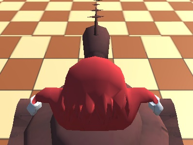

Página de Yuri
Descripción
Dicen que alguna vez mi nombre fue filtrado...
- Nombre: [DATOS BORRADOS]
- Edad: 23 (10/06/99)
- Pais: Chile
- Hobby: Jugar y crear videojogos.
- Anime preferidos: 1. JoJo's Bizarre Adventure; 2. Hajime no Ippo; 3. Hunter x Hunter.
- Juegos preferidos: Super Mario Sunshine.
- Frase celebre: "No juego weás."
- Comida favorita: Jurel (enlatado) y Salmón (sashimi).
- Personaje main en lol: Teemo, Malzahar, Veigar.
- Algo que odia: Kimetsu no Yaiba, el 99% de animes que tenga "Kanojo" en el nombre, LoL desde la S7.
- Personaje/personajes preferidos (en general): Jotaro Kujo, Yuri, Mario.
- Cancion preferida: Stand Proud, Dan Dan Kokoro Hikareteku, Katamari of Love.
JUEGOS
Estos son mis juegos.
Dale click a la imagen para descargar Ugandan War

Haz click aquí para ir al inicio.
Haz click aquí para ir a los referidos.
Haz click aquí para ir a los Juegos.
Puro weon poniendo el mouse encima mío
El reproductor de música.